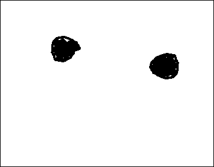

| A problem with the standard model is that by the time the rocks have appeared, they are in Keplerian orbits about the young star and so they collide at velocities of kilometers per second. |
| Smacking two rocks together at several km/sec will not give a larger rock, but rather a cloud of much smaller rocks moving wildly off in all directions. |
|  |
| The problem is to get from dust to rock piles. |
Return to Fractal Planets, Real.